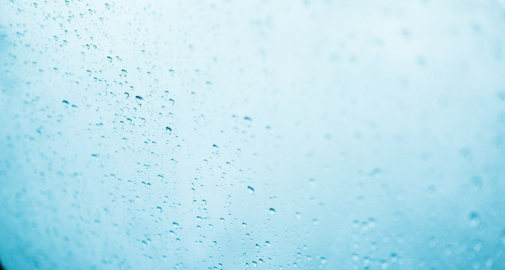

雨がぽつぽつと降り出した。
僕らはある店で顔を合わせていた。
「こんな日に言うのも何だけれど」
「それなら言わないで」
まさかの返答に困ってしまった。
どうしても言いたいことがあるのに、彼女はそれを許してくれないようだ。
沈黙の時間が続いた。そうすると、彼女は重たげな口をゆっくりと動かした。
「私、思うの。永遠なんてどこにも存在しないって」
「うん」
「あなたはどう思う？」
まっすぐな瞳が僕を吸いこもうとしている。
僕はこの瞳にめっぽう弱いのだ。
「君はずるいね」
「何で？」
「言うまでもないことさ」
やっと僕ら以外にも客がやってきた。どうやら雨の日はみんな外に出たがらないらしい。
「確かに永遠に続くものはない。でも……」
「でも？」
敢えて彼女の目を見なかった。
彼女の腕時計は4:44を指してまま動かない。
「永遠のもの、確かなものを欲しがるのが僕らの性分じゃないかな」
彼女はその時、ふっとため息を漏らした。
「そうかもね。いや、きっとそうなんだと思う」
もうかれこれ1時間は、ここで彼女と顔を突き合わせていた。
「そろそろ出ない？」
彼女はそれには答えずに、雨に濡れる街を見ている。
「そっか……きっとそうだわ」
彼女は突然独り言を呟いた。
「どうしたの？」
「やっと思い出した。あなたとのこと」
つい立ち上がりそうになってしまった。
「本当に？」
「ええ」
「じゃあ行こうか」
彼女の分のお代を払い、店のドアを開けた。
「病みつきになりそうな味ね」
「そうでしょ。君もきっと常連になるよ」
僕は大きな傘を広げながら言った。そして、彼女もピンクの傘を差した。
雨はさっきよりも強くなっていた。
「そういえば、さっきあなたが言いたかったことって」
「僕らは永遠になった。それだけのことなんだ」
僕らはしばらく歩き続けた。
彼女は時折、雨雲の様子を窺っていた。
「こんな日に雨だなんて、先が思いやられそう」
「気にすることないよ。止まない雨はないんだから」
そう言っても、彼女は冴えない表情をした。
日がすっかり暮れてしまった頃、ようやく一軒の家に辿り着いた。
「ここで私たちは暮らすの？」
「そうさ。もう何にも縛られずに前に進める」
「それにしても、随分質素な家ね」
「これくらいが僕らにはいいと思ったんだ。気に入らない？」
「あなたらしい家ですごく気に入ってる」
彼女は悪戯な笑顔を見せた。
家の中に入ると、彼女は雨で少し濡れてしまった服を脱いだ。
「とても痛かったろう」
彼女はこくりと頷いた。
「身体が引き裂かれたんだもの」
傷を見て、僕は涙をこぼした。
「でも、一瞬だった。すぐにこの世界に来れた。そして、あなたとまた出会えた。それだけで満足なの」
そう言って、彼女は僕にキスをした。
ぼんやりとした優しいオレンジ色のランプが、僕らの愛を照らした。
「ごめんよ。今まで寂しい思いをさせて」
彼女は何も言わなかった。少しの間があった。
「もうどこにも行かないでね。約束よ」
雨は飽きることなく、音を立てて降り続いていた。
もしかしたら、この雨も永遠なのかもしれない。そう思えた。
翌朝目を覚ますと、眩しいくらいの太陽が顔を出していた。
彼女の姿はなかった。身体を起こすと、突然電話が鳴った。
彼女からだった。
「言い忘れてたけど、実は雨女なの」
「君の仕業だったのか」
「今日は快晴ね」
「どこにいるの？」
「例のお店よ」
「すぐに行く」
「来ないで」
「えっ？」
「私、何故だか雨の日じゃないとあなたを愛せないの」
言葉を失った。
「少しだけ待ってて。私とあなたはいつでも繋がっているから」
「分かった」
僕の精一杯の言葉だった。
「やっぱりここの1杯は最高ね」
彼女の笑顔が頭に浮かんだ。
その後、色々と考えた。
彼女の目的は何だ。そもそもさっきの電話の内容自体、嘘なんじゃないか。もしかしたら、もう僕のことを愛していないのかもしれない。
考えれば考えるほど、ますます分からなくなった。
外に出ることも放棄し、悶々とした日々を過ごした。
しかし、ある時、彼女のことを考えるのをやめた。人の心情に土足で踏み入ることほど、愚かな行為はない。
でも、僕のことは永遠に忘れてほしくなかった。たとえ、それが矛盾した願いであったとしても。
あれから今まで、雨は一度も降っていない。
そのことについて、深く考えていない。
永遠なんてものは存在しない。ただ時間が流れるだけだ。
彼女の言葉を信じて、今日も密かに暮らしを営んでいる。